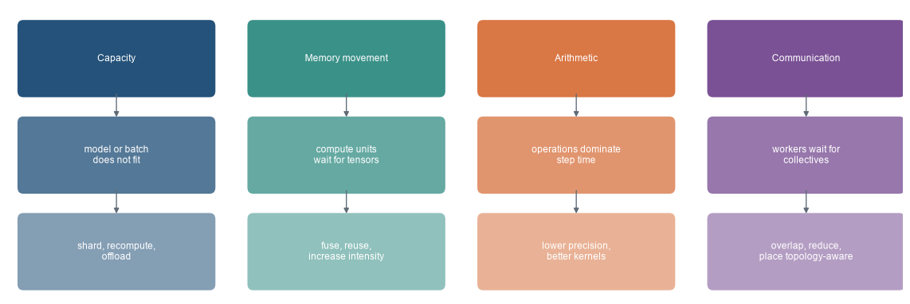
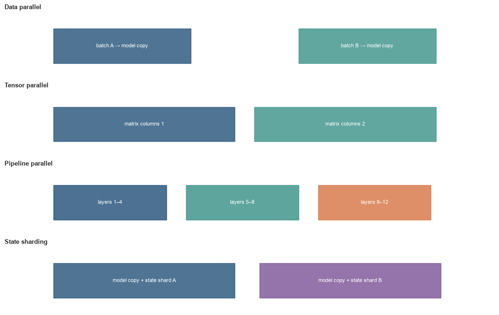

Matching computation, memory, and communication to the training workload
The problem
The loop in Chapter 14 can produce a valid update on paper and still fail on the machine that must run it. The model or its activations may not fit in memory. Arithmetic units may wait for data, workers may wait for a collective operation, or one pipeline stage may sit idle while another finishes. These failures have different causes, so they require different measurements and different changes.
One update is also a systems workload. It holds parameters, gradients, optimiser state, activations, and temporary buffers; it reads and writes memory; it performs arithmetic; and, with several workers, it communicates. Mixed precision, fusion, activation recomputation, parallelism, and sharding each alter some of those costs while introducing a different dependency. A useful intervention follows from the resource that is actually limiting the measured step.
Diagnose the limiting resource
The opening diagram is a diagnostic map, not a menu of interchangeable optimisations. Start with the observed symptom, identify the resource that can produce it, then examine the intervention’s cost elsewhere. For example, recomputation can release activation memory while adding arithmetic; data parallelism raises throughput while replicating model state.
Code
import numpy as npimport matplotlib.pyplot as pltfrom matplotlib.patches import FancyBboxPatchplt.style.use("seaborn-v0_8-whitegrid")blue, teal, orange, purple, grey ="#24527a", "#3a9188", "#d97745", "#7a5195", "#5f6b76"titles=["Capacity","Memory movement","Arithmetic","Communication"]symptoms=["model or batch\ndoes not fit","compute units\nwait for tensors","operations dominate\nstep time","workers wait for\ncollectives"]responses=["shard, recompute,\noffload","fuse, reuse,\nincrease intensity","lower precision,\nbetter kernels","overlap, reduce,\nplace topology-aware"]colours=[blue,teal,orange,purple]fig,ax=plt.subplots(figsize=(12,4.1))for j,(title,symptom,response,colour) inenumerate(zip(titles,symptoms,responses,colours)): x=j*2.8for y,text,alpha in [(2.25,title,1), (1.15,symptom,.78), (.05,response,.56)]: box=FancyBboxPatch((x,y),2.25,.72,boxstyle="round,pad=.08,rounding_size=.07", facecolor=colour,edgecolor="none",alpha=alpha) ax.add_patch(box); ax.text(x+1.125,y+.36,text,ha="center",va="center",color="white",fontsize=9) ax.annotate("",xy=(x+1.125,1.92),xytext=(x+1.125,2.23),arrowprops=dict(arrowstyle="-|>",color=grey)) ax.annotate("",xy=(x+1.125,.82),xytext=(x+1.125,1.13),arrowprops=dict(arrowstyle="-|>",color=grey))ax.set_xlim(-.2,10.7); ax.set_ylim(-.1,3.2); ax.axis("off")plt.tight_layout(); plt.show()

Figure 16.1: Training efficiency depends on which resource constrains the measured step.
The interventions are not interchangeable. Activation recomputation reduces stored activations but adds arithmetic. Fusion reduces intermediate memory traffic but may not reduce parameter memory. Data parallelism can raise throughput while replicating the full model on every worker. Measurement must precede the intervention.
Training systems. The hardware and software path that turns a training design into updates under memory, arithmetic, and communication limits. Throughput, precision, recomputation, and parallelism change the cost and sometimes the numerical path of a run.
Level 1 - Intuition
Training moves and stores more than model weights
The parameter file is not a training-memory estimate. Training must retain or reconstruct information needed for backpropagation, store gradients, and maintain optimiser state. Adam commonly keeps first and second moments for every trainable parameter. Mixed-precision implementations may retain higher-precision optimiser state even when forward and backward arithmetic use lower precision.
For one billion parameters, a two-byte parameter representation occupies about 2 GB. That number excludes gradients, optimiser moments, master weights, activations, temporary workspaces, and allocator overhead. A “2 GB model” can therefore exceed a 24 GB device once the training loop is included.
Figure 16.2: Parameter sharding changes persistent model-state memory per worker, while activation memory remains a separate term.
The figure uses a simplified 16-bytes-per-parameter mixed-precision Adam accounting. It illustrates the redundancy removed by ZeRO-style stages (Rajbhandari et al. 2020). Actual frameworks differ in representation, padding, fragmentation, temporary buffers, and whether a separate master-weight copy is retained. Activations can still dominate and are deliberately absent from the bars.
Fast arithmetic does not guarantee a fast operation
An accelerator cannot multiply data that have not arrived. A large matrix multiplication reuses values many times and can perform substantial arithmetic for each byte moved. An element-wise activation may read a tensor, apply one small operation, and write another tensor. The first can approach arithmetic throughput; the second may be limited by memory bandwidth.
Kernel fusion combines operations so intermediate values remain in registers or local memory instead of being written to and read from device memory. Fusion changes data movement and launch overhead. It does not change the mathematical model when implemented correctly.
Parallelism exchanges replication for coordination
Data parallelism replicates the model and gives each worker different observations. It increases global batch throughput but requires gradients to be combined. Tensor parallelism splits operations within a layer and communicates partial results. Pipeline parallelism assigns layer groups to stages and sends activations and gradients between them. State-sharded data parallelism retains data-parallel computation while distributing model state.
Each strategy introduces waiting and communication. More devices increase available resources, but speedup remains below the device count when serial work, communication, imbalance, or pipeline bubbles occupy time.
The resource diagnosis must be translated into quantities that can be counted or timed: persistent and transient memory, numerical range, bytes moved per operation, and communication on the chosen topology. Level 2 develops those mechanics.
Level 2 - Mechanics
Memory has persistent and transient components
Persistent model state includes parameters, gradients, and optimiser tensors. Transient memory includes saved activations, attention or convolution workspaces, communication buffers, temporary results, and the framework allocator’s reserved blocks. Peak memory occurs when several of these coexist, not necessarily at the end of the forward pass.
Activation memory depends on batch size, sequence length or image dimensions, hidden width, number of saved layers, and representation bytes. A simple dense activation tensor has
\[
M_{\text{activation}}=B\times S\times H\times q,
\]
where \(B\) is micro-batch size, \(S\) sequence length, \(H\) hidden width, and \(q\) bytes per element. Backpropagation requires several tensors per layer, so this is a building block rather than a complete forecast.
Activation recomputation stores selected boundaries and reruns omitted forward operations during backpropagation. Chen et al. (2016) derive memory–compute trade-offs for this approach. Offloading moves state to host memory or storage, replacing device capacity with transfer and latency costs.
Reduced precision changes range and resolution
Floating-point formats allocate bits to sign, exponent, and significand. Exponent bits determine dynamic range; significand bits determine relative resolution. FP16 has more significand bits than BF16 but far fewer exponent bits. BF16 therefore retains a range close to FP32 while representing nearby values less precisely.
Figure 16.3: FP16 offers greater significand precision than BF16 but a much smaller dynamic range.
The decimal digits are approximate properties of the significand, not guaranteed accurate digits in a training result. Mixed-precision training protects numerically sensitive operations, reductions, and optimiser updates while using lower precision where accelerator hardware benefits (Micikevicius et al. 2018). Loss scaling addresses underflow in small FP16 gradients; it does not extend the range of forward activations.
Arithmetic intensity predicts a performance ceiling
Arithmetic intensity is the number of floating-point operations performed per byte transferred from the relevant memory level:
where \(P\) is attainable throughput, \(P_{\text{peak}}\) peak arithmetic throughput, and \(B_{\text{memory}}\) memory bandwidth (Williams, Waterman, and Patterson 2009).
Figure 16.4: A simplified roofline separates bandwidth-limited and compute-limited arithmetic intensities.
The points are illustrative, not measurements of a specific accelerator. A real profile must use realised tensor shapes, memory hierarchy, precision, kernel implementation, and achieved throughput. The model explains why reducing FLOPs may not accelerate a bandwidth-limited operation and why fusion can help without changing FLOP count.
Data parallelism combines gradients
With \(W\) data-parallel workers, each replica computes gradients on a local micro-batch. An all-reduce combines them so every replica applies the same update. If gradients are summed by the collective, division by the appropriate global observation or token count must reproduce the intended loss reduction.
Strong scaling holds the global workload fixed while increasing workers. Ideal step time falls as \(1/W\). Communication and fixed overhead prevent that limit. Define speedup and efficiency as
Figure 16.5: Communication and fixed overhead make data-parallel speedup sublinear as worker count grows.
The communication model is constructed to show the relationship, not to forecast a cluster. Scaling should be measured against a well-utilised baseline. A weak one-worker baseline can make distributed efficiency appear better than the actual system design.
Model parallelism partitions computation
Tensor parallelism splits weight matrices or related operations across devices. A column split can calculate partial output features independently, while a row split produces partial sums that must be reduced. Communication is frequent and often remains within a node with a fast interconnect. Megatron-LM demonstrates intra-layer parallelism for large Transformer models (Shoeybi et al. 2019).
Pipeline parallelism assigns sequences of layers to stages. Micro-batches flow through those stages so devices can work concurrently. Empty periods while a pipeline fills and drains are pipeline bubbles. More micro-batches can reduce the bubble fraction but increase activation storage or schedule complexity. GPipe develops a pipeline approach based on splitting a mini-batch into micro-batches (Huang et al. 2019).
Code
fig,axes=plt.subplots(4,1,figsize=(11,7))rows=["Data parallel","Tensor parallel","Pipeline parallel","State sharding"]for ax,title inzip(axes,rows): ax.set_title(title,loc="left",fontsize=10,fontweight="bold"); ax.set_xlim(0,10); ax.set_ylim(0,1); ax.axis("off")for x,c,t in [(1,blue,"batch A"),(6,teal,"batch B")]: axes[0].add_patch(plt.Rectangle((x,.2),2.8,.55,color=c,alpha=.8)); axes[0].text(x+1.4,.475,t+" → model copy",ha="center",va="center",color="white",fontsize=8)for x,c,t in [(1,blue,"matrix columns 1"),(5.1,teal,"matrix columns 2")]: axes[1].add_patch(plt.Rectangle((x,.2),3.7,.55,color=c,alpha=.8)); axes[1].text(x+1.85,.475,t,ha="center",va="center",color="white",fontsize=8)for x,c,t in [(1,blue,"layers 1–4"),(3.7,teal,"layers 5–8"),(6.4,orange,"layers 9–12")]: axes[2].add_patch(plt.Rectangle((x,.2),2.3,.55,color=c,alpha=.82)); axes[2].text(x+1.15,.475,t,ha="center",va="center",color="white",fontsize=8)for x,c,t in [(1,blue,"model copy + state shard A"),(5.2,purple,"model copy + state shard B")]: axes[3].add_patch(plt.Rectangle((x,.2),3.7,.55,color=c,alpha=.8)); axes[3].text(x+1.85,.475,t,ha="center",va="center",color="white",fontsize=8)plt.tight_layout(); plt.show()

Figure 16.6: Data, tensor, pipeline, and state-sharded parallelism divide different objects and therefore communicate at different boundaries.
Hybrid systems combine these dimensions. The useful configuration depends on model shapes, device memory, network topology, global batch constraints, and the communication generated by each partition. Narayanan et al. (2021) analyse combinations of data, tensor, and pipeline parallelism for large language-model training.
The mechanisms only justify a systems change if the relevant quantity is measured under the workload at issue. Level 3 derives memory and communication accounting, then separates time categories in a profile.
Level 3 - Mathematics & Code
A memory estimate must state its assumptions
Let \(P\) be the number of parameters, \(q_p\) parameter bytes, \(q_g\) gradient bytes, and \(q_o\) optimiser-state bytes per parameter. A replicated persistent-state estimate is
\[
M_{\text{state}}=P(q_p+q_g+q_o).
\]
With two FP32 Adam moments and an FP32 master copy, \(q_o=12\) bytes. FP16 parameters and gradients add four, giving 16 bytes per parameter. ZeRO stage 1 shards optimiser state across \(W\) workers; stage 2 also shards gradients; stage 3 also shards parameters:
This excludes activations, temporary gathered parameters, communication buffers, fragmentation, and implementation metadata. It is a lower-level component of a peak-memory model, not a capacity guarantee.
Code
def persistent_state_gb(parameters, workers=1, stage=0, parameter_bytes=2, gradient_bytes=2, master_bytes=4, moment_bytes=8): parameter_factor = workers if stage >=3else1 gradient_factor = workers if stage >=2else1 optimizer_factor = workers if stage >=1else1 total = parameters*parameter_bytes/parameter_factor total += parameters*gradient_bytes/gradient_factor total += parameters*(master_bytes+moment_bytes)/optimizer_factorreturn total/1e9for stage inrange(4):print(f"stage {stage}: {persistent_state_gb(1_000_000_000,8,stage):.2f} GB per worker")
stage 0: 16.00 GB per worker
stage 1: 5.50 GB per worker
stage 2: 3.75 GB per worker
stage 3: 2.00 GB per worker
The output reproduces the stacked-bar totals. A practical estimator should add measured activation peaks for representative shapes and a margin for workspaces and allocator behaviour.
“Exposed” means time that is not hidden behind other work. Communication can overlap backpropagation; data loading can overlap the previous step. Adding raw component durations can exceed wall-clock time when overlap exists.
The example is not executed because it requires the model, input pipeline, and accelerator under investigation. A useful profile includes warm-up steps, representative shapes, synchronization at timing boundaries, and enough iterations to distinguish startup from steady state. Operator tables locate expensive kernels; a timeline is needed to see overlap, gaps, and collective waits.
Communication volume and latency both matter
Collectives have a payload and a coordination cost. A simplified model is
where \(\alpha\) is per-round latency, \(n\) payload bytes, \(b\) effective bandwidth, and \(f\) and \(g\) depend on the algorithm and topology. Combining many small gradients into buckets can reduce latency overhead. Making buckets too large can delay the start of communication and reduce overlap with backpropagation.
Distributed Data Parallel implementations use gradient buckets and overlap communication with backward computation (Li et al. 2020). Profiling should report the exposed collective time and the slowest worker. One delayed worker can hold every participant at a synchronization point.
Pipeline bubbles can be counted
With \(p\) stages and \(m\) micro-batches under a simple all-forward-then-all-backward schedule, pipeline utilisation is bounded by fill and drain periods. A common forward-only intuition gives
\[
U\approx\frac{m}{m+p-1}.
\]
For four stages, utilisation rises from \(25\%\) with one micro-batch to about \(84\%\) with sixteen. Training schedules include backward passes and can interleave them differently, so the exact bubble fraction depends on the schedule.
Code
stages=4for microbatches in [1,2,4,8,16,32]: utilisation=microbatches/(microbatches+stages-1)print(f"{microbatches:>2} micro-batches: {utilisation:.1%} forward-pipeline utilisation bound")
Increasing micro-batches changes the scheduling problem but does not balance unequal stages. A stage that consistently takes longer becomes the throughput limit. Partitioning should therefore use measured stage times and memory, not layer counts alone.
Level 4 - Research & Systems
Utilisation is a consequence, not a diagnosis
High accelerator utilisation can coexist with inefficient work, including recomputation, padding, or kernels that perform unnecessary arithmetic. Low utilisation can arise from data starvation, launch gaps, synchronization, small shapes, memory stalls, or host-side control. A profile should attribute idle intervals and compare achieved bandwidth or arithmetic throughput with a relevant ceiling.
Throughput should be reported in units connected to the workload: observations, tokens, or valid tokens per second. Padding can raise raw tokens per second without raising useful work. Time-to-validation target combines systems throughput with optimisation behaviour and can reveal when a larger batch improves hardware use but requires more updates or changes final quality.
ZeRO and sharded data parallelism trade redundancy for communication
ZeRO progressively partitions optimiser state, gradients, and parameters across data-parallel workers (Rajbhandari et al. 2020). Parameter sharding permits models whose persistent state exceeds one device, but parameters must be gathered for computation and gradients reduced or scattered afterwards. Communication timing and bucket size determine how much of this cost is exposed.
Fully sharded implementations also face checkpoint and resharding questions. A local shard is not a complete model. Saving may preserve shards, gather a full state dictionary, or write a distributed checkpoint format. The recovery topology and memory peak during saving must be tested.
Tensor and pipeline parallelism follow model structure
Tensor parallelism can keep large matrix multiplications distributed but communicates within layers. It benefits from high-bandwidth, low-latency links and partitions aligned with matrix dimensions. Pipeline parallelism communicates less frequently at layer-group boundaries but stores activations for in-flight micro-batches and introduces bubbles. Stage imbalance limits throughput even when aggregate compute is sufficient.
Large systems combine data, tensor, pipeline, and state-sharded dimensions. Narayanan et al. (2021) report that the configuration must account for expensive cross-node communication and pipeline idling at scale. Their measured results describe a particular model family and cluster; the transferable method is to map communication-heavy dimensions onto faster links and profile the resulting schedule.
Precision is an end-to-end contract
Choosing BF16 or FP16 in a configuration does not imply that every operation uses that format. Matrix inputs, accumulators, reductions, normalisation statistics, optimiser state, and communication can use different representations. Hardware may execute the same nominal format through different kernel paths depending on shape and alignment.
A precision audit should record autocast policy, loss-scaling behaviour, accumulator types, master or optimiser-state precision, collective precision, non-finite checks, skipped updates, and validation differences against a reference configuration. Speed comparisons must include conversion and scaling overhead.
Reliability changes at cluster scale
Long distributed runs encounter worker failures, transient communication errors, storage delays, and performance stragglers. Checkpoint interval balances lost compute against storage traffic and pause time. A restart can change worker topology or data assignment, so the recovery contract from Chapter 14 must include distributed checkpoint layout and sampler state.
Silent slowdowns also matter. Thermal or power limits, degraded links, data-service contention, and one slow host can reduce throughput without producing an error. Step-time distributions by rank, collective duration, input wait, and retry counts are therefore operational signals, not optional diagnostics.
An efficiency audit connects model quality and resource use
An audit should report model and input shapes, valid-token fraction, precision policy, micro-batch and global batch, accumulation, recomputation, memory peaks, optimiser-state representation, parallelism dimensions, device and interconnect topology, achieved throughput, step-time decomposition, exposed communication, scaling baseline, checkpoint cost, failures, and energy or device-hours where available.
System changes should also be checked against training outcomes. Kernel fusion, lower precision, different reduction order, or altered batch construction can change the numerical path. A faster step is useful only if the resulting run still satisfies the intended optimisation and validation criteria.
Common misconceptions
Model size in bytes equals training memory. Gradients, optimiser state, activations, workspaces, and allocator overhead also consume memory.
Out-of-memory errors prove that parameters are too large. Activation peaks or temporary workspaces may be the limiting allocation.
A GPU with twice the peak FLOPs trains every model twice as fast. Memory, shape, kernels, and communication can set lower ceilings.
Reducing FLOPs necessarily reduces runtime. A bandwidth-limited operation can remain unchanged.
Kernel fusion changes the learning objective. Correct fusion changes execution and memory movement, not the intended equations.
BF16 is simply a less precise FP16. BF16 has less significand precision but a much larger range.
Loss scaling fixes forward overflow. It protects small backward gradients; it does not repair invalid forward values.
Adding workers produces linear speedup. Communication, serial work, imbalance, and idle periods reduce efficiency.
Data parallelism allows a model larger than one worker’s memory. Ordinary data parallelism replicates the complete model state.
Gradient accumulation and data parallelism solve the same problem. Accumulation reduces activation-memory pressure; data parallelism adds compute and communication resources.
ZeRO removes communication. It removes state redundancy while requiring gathers and reduce-scatter operations.
Tensor parallelism communicates only once per step. It can communicate within every partitioned layer.
Pipeline parallelism keeps every stage busy automatically. Fill, drain, and imbalance create bubbles.
High utilisation proves efficiency. The device may be busy performing padding, recomputation, or avoidable work.
Activation checkpointing and training checkpoints are related recovery methods. One trades compute for within-step memory; the other preserves run state.
One throughput number is enough to compare systems. Workload, valid tokens, baseline, precision, quality, and hardware must be specified.
Exercises
Estimate persistent mixed-precision Adam state for 500 million parameters under the chapter’s 16-byte assumption.
Recalculate the per-worker state for ZeRO stages 1, 2, and 3 across four workers.
Explain why the estimate does not guarantee that the model will fit.
Calculate one activation tensor’s memory for batch 8, sequence 2,048, hidden width 4,096, and BF16.
Distinguish capacity from bandwidth using two observed training symptoms.
For peak throughput 200 TFLOP/s and bandwidth 2 TB/s, calculate the roofline ridge point.
Explain why an element-wise activation is commonly more bandwidth-sensitive than a large matrix multiplication.
Identify which intermediate writes can be removed by fusing bias, activation, and dropout.
Compare FP16 and BF16 for an activation whose magnitude can reach \(10^8\).
Explain why FP32 accumulation can be useful when inputs use BF16.
Given step times at one and eight workers, calculate speedup and efficiency.
Modify the scaling simulation so communication cannot overlap and interpret the result.
Describe the collective needed after a row-parallel matrix multiplication.
Calculate the forward pipeline utilisation bound for eight stages and 32 micro-batches.
Explain why equal layer counts can produce imbalanced pipeline stages.
Select a parallelism strategy for a model that fits on one device but needs higher data throughput.
Select a strategy for persistent state that exceeds one device while individual layers still fit.
Design a profile that separates input wait, computation, and exposed communication.
Define a useful-token throughput metric for variable-length sequences.
Design a precision audit comparing BF16 training with an FP32 reference.
Specify a distributed-checkpoint test that changes the worker count on restart.
Design an end-to-end efficiency comparison that includes validation quality and device-hours.
Summary
Efficient training requires identifying the resource that limits the measured workload. Memory capacity determines whether state and activations fit. Memory bandwidth and arithmetic intensity determine whether operations can approach compute throughput. Communication and imbalance determine how additional workers translate into speedup.
Mixed precision changes representation, range, resolution, memory, and available hardware kernels. Activation recomputation trades arithmetic for activation memory. ZeRO-style sharding removes replicated state while adding communication. Data, tensor, and pipeline parallelism partition different objects and therefore create different collectives and idle periods.
Peak specifications and utilisation percentages do not establish efficiency. Memory accounting, workload-aware throughput, timelines, scaling efficiency, exposed communication, validation outcomes, and recovery behaviour provide the evidence needed to select and verify a system configuration.
Looking ahead
Chapter 16 begins Part III with vectors, tensors, and representations. Parts I and II have established how models are defined and trained; the next part examines what their intermediate numerical representations encode and how those representations support modern sequence architectures.
Further reading
The roofline model is developed by Williams, Waterman, and Patterson (2009). Mixed-precision training is described by Micikevicius et al. (2018), activation recomputation by Chen et al. (2016), and distributed data parallelism by Li et al. (2020). ZeRO state sharding is introduced by Rajbhandari et al. (2020). Tensor parallelism is demonstrated by Shoeybi et al. (2019), pipeline parallelism by Huang et al. (2019), and combinations of data, tensor, and pipeline parallelism are analysed by Narayanan et al. (2021).
Chen, Tianqi, Bing Xu, Chiyuan Zhang, and Carlos Guestrin. 2016. “Training Deep Nets with Sublinear Memory Cost.”arXiv Preprint arXiv:1604.06174. https://arxiv.org/abs/1604.06174.
Li, Shen, Yanli Zhao, Rohan Varma, Omkar Salpekar, Pieter Noordhuis, Teng Li, Adam Paszke, et al. 2020. “PyTorch Distributed: Experiences on Accelerating Data Parallel Training.”arXiv Preprint arXiv:2006.15704. https://arxiv.org/abs/2006.15704.
Micikevicius, Paulius, Sharan Narang, Jonah Alben, Gregory Diamos, Erich Elsen, David Garcia, Boris Ginsburg, et al. 2018. “Mixed Precision Training.” In International Conference on Learning Representations. https://openreview.net/forum?id=r1gs9JgRZ.
Narayanan, Deepak, Mohammad Shoeybi, Jared Casper, Patrick LeGresley, Mostofa Patwary, Vijay Anand Korthikanti, Dmitri Vainbrand, et al. 2021. “Efficient Large-Scale Language Model Training on GPU Clusters Using Megatron-LM.”arXiv Preprint arXiv:2104.04473. https://arxiv.org/abs/2104.04473.
Rajbhandari, Samyam, Jeff Rasley, Olatunji Ruwase, and Yuxiong He. 2020. “ZeRO: Memory Optimizations Toward Training Trillion Parameter Models.” In SC20: International Conference for High Performance Computing, Networking, Storage and Analysis, 1–16. https://doi.org/10.1109/SC41405.2020.00024.
Shoeybi, Mohammad, Mostofa Patwary, Raul Puri, Patrick LeGresley, Jared Casper, and Bryan Catanzaro. 2019. “Megatron-LM: Training Multi-Billion Parameter Language Models Using Model Parallelism.”arXiv Preprint arXiv:1909.08053. https://arxiv.org/abs/1909.08053.
Williams, Samuel, Andrew Waterman, and David Patterson. 2009. “Roofline: An Insightful Visual Performance Model for Multicore Architectures.”Communications of the ACM 52 (4): 65–76. https://doi.org/10.1145/1498765.1498785.
Source Code
---title: "Efficient Training Systems"subtitle: "Matching computation, memory, and communication to the training workload"---## The problemThe loop in Chapter 14 can produce a valid update on paper and still fail on the machine that must run it. The model or its activations may not fit in memory. Arithmetic units may wait for data, workers may wait for a collective operation, or one pipeline stage may sit idle while another finishes. These failures have different causes, so they require different measurements and different changes.One update is also a systems workload. It holds parameters, gradients, optimiser state, activations, and temporary buffers; it reads and writes memory; it performs arithmetic; and, with several workers, it communicates. Mixed precision, fusion, activation recomputation, parallelism, and sharding each alter some of those costs while introducing a different dependency. A useful intervention follows from the resource that is actually limiting the measured step.### Diagnose the limiting resourceThe opening diagram is a diagnostic map, not a menu of interchangeable optimisations. Start with the observed symptom, identify the resource that can produce it, then examine the intervention's cost elsewhere. For example, recomputation can release activation memory while adding arithmetic; data parallelism raises throughput while replicating model state.```{python}#| label: fig-resource-questions#| fig-cap: "Training efficiency depends on which resource constrains the measured step."#| fig-alt: "A four-column diagram links memory capacity, memory movement, arithmetic throughput, and communication to their observable symptoms and typical interventions."import numpy as npimport matplotlib.pyplot as pltfrom matplotlib.patches import FancyBboxPatchplt.style.use("seaborn-v0_8-whitegrid")blue, teal, orange, purple, grey ="#24527a", "#3a9188", "#d97745", "#7a5195", "#5f6b76"titles=["Capacity","Memory movement","Arithmetic","Communication"]symptoms=["model or batch\ndoes not fit","compute units\nwait for tensors","operations dominate\nstep time","workers wait for\ncollectives"]responses=["shard, recompute,\noffload","fuse, reuse,\nincrease intensity","lower precision,\nbetter kernels","overlap, reduce,\nplace topology-aware"]colours=[blue,teal,orange,purple]fig,ax=plt.subplots(figsize=(12,4.1))for j,(title,symptom,response,colour) inenumerate(zip(titles,symptoms,responses,colours)): x=j*2.8for y,text,alpha in [(2.25,title,1), (1.15,symptom,.78), (.05,response,.56)]: box=FancyBboxPatch((x,y),2.25,.72,boxstyle="round,pad=.08,rounding_size=.07", facecolor=colour,edgecolor="none",alpha=alpha) ax.add_patch(box); ax.text(x+1.125,y+.36,text,ha="center",va="center",color="white",fontsize=9) ax.annotate("",xy=(x+1.125,1.92),xytext=(x+1.125,2.23),arrowprops=dict(arrowstyle="-|>",color=grey)) ax.annotate("",xy=(x+1.125,.82),xytext=(x+1.125,1.13),arrowprops=dict(arrowstyle="-|>",color=grey))ax.set_xlim(-.2,10.7); ax.set_ylim(-.1,3.2); ax.axis("off")plt.tight_layout(); plt.show()```The interventions are not interchangeable. Activation recomputation reduces stored activations but adds arithmetic. Fusion reduces intermediate memory traffic but may not reduce parameter memory. Data parallelism can raise throughput while replicating the full model on every worker. Measurement must precede the intervention.::: {.concept-box .concept-core #concept-training-systems data-term="Training systems" data-domain="Training and evaluation"}**Training systems.** The hardware and software path that turns a training design into updates under memory, arithmetic, and communication limits. Throughput, precision, recomputation, and parallelism change the cost and sometimes the numerical path of a run.:::## Level 1 - Intuition### Training moves and stores more than model weightsThe parameter file is not a training-memory estimate. Training must retain or reconstruct information needed for backpropagation, store gradients, and maintain optimiser state. Adam commonly keeps first and second moments for every trainable parameter. Mixed-precision implementations may retain higher-precision optimiser state even when forward and backward arithmetic use lower precision.For one billion parameters, a two-byte parameter representation occupies about 2 GB. That number excludes gradients, optimiser moments, master weights, activations, temporary workspaces, and allocator overhead. A “2 GB model” can therefore exceed a 24 GB device once the training loop is included.```{python}#| label: fig-memory-accounting#| fig-cap: "Parameter sharding changes persistent model-state memory per worker, while activation memory remains a separate term."#| fig-alt: "Stacked bars compare replicated mixed-precision Adam state with three ZeRO sharding stages across eight workers for a one-billion-parameter model."parameters=1e9; workers=8components={"FP16 parameters":np.array([2,2,2,2/workers]),"FP16 gradients":np.array([2,2,2/workers,2/workers]),"FP32 master weights":np.array([4,4/workers,4/workers,4/workers]),"FP32 Adam moments":np.array([8,8/workers,8/workers,8/workers]),}labels=["replicated","shard optimiser","+ shard gradients","+ shard parameters"]fig,ax=plt.subplots(figsize=(9.5,5))bottom=np.zeros(4)for (name,values),colour inzip(components.items(),[blue,orange,teal,purple]): ax.bar(labels,values,bottom=bottom,label=name,color=colour); bottom+=valuesfor j,total inenumerate(bottom): ax.text(j,total+.35,f"{total:.1f} GB",ha="center",fontsize=9)ax.set_ylabel("Persistent model-state memory per worker (GB)")ax.set_title("One billion parameters, eight workers; activations excluded")ax.legend(ncol=2,fontsize=8); ax.set_ylim(0,18)plt.tight_layout(); plt.show()```The figure uses a simplified 16-bytes-per-parameter mixed-precision Adam accounting. It illustrates the redundancy removed by ZeRO-style stages [@rajbhandari2020zero]. Actual frameworks differ in representation, padding, fragmentation, temporary buffers, and whether a separate master-weight copy is retained. Activations can still dominate and are deliberately absent from the bars.### Fast arithmetic does not guarantee a fast operationAn accelerator cannot multiply data that have not arrived. A large matrix multiplication reuses values many times and can perform substantial arithmetic for each byte moved. An element-wise activation may read a tensor, apply one small operation, and write another tensor. The first can approach arithmetic throughput; the second may be limited by memory bandwidth.Kernel fusion combines operations so intermediate values remain in registers or local memory instead of being written to and read from device memory. Fusion changes data movement and launch overhead. It does not change the mathematical model when implemented correctly.### Parallelism exchanges replication for coordinationData parallelism replicates the model and gives each worker different observations. It increases global batch throughput but requires gradients to be combined. Tensor parallelism splits operations within a layer and communicates partial results. Pipeline parallelism assigns layer groups to stages and sends activations and gradients between them. State-sharded data parallelism retains data-parallel computation while distributing model state.Each strategy introduces waiting and communication. More devices increase available resources, but speedup remains below the device count when serial work, communication, imbalance, or pipeline bubbles occupy time.The resource diagnosis must be translated into quantities that can be counted or timed: persistent and transient memory, numerical range, bytes moved per operation, and communication on the chosen topology. Level 2 develops those mechanics.## Level 2 - Mechanics### Memory has persistent and transient componentsPersistent model state includes parameters, gradients, and optimiser tensors. Transient memory includes saved activations, attention or convolution workspaces, communication buffers, temporary results, and the framework allocator's reserved blocks. Peak memory occurs when several of these coexist, not necessarily at the end of the forward pass.Activation memory depends on batch size, sequence length or image dimensions, hidden width, number of saved layers, and representation bytes. A simple dense activation tensor has$$M_{\text{activation}}=B\times S\times H\times q,$$where $B$ is micro-batch size, $S$ sequence length, $H$ hidden width, and $q$ bytes per element. Backpropagation requires several tensors per layer, so this is a building block rather than a complete forecast.Activation recomputation stores selected boundaries and reruns omitted forward operations during backpropagation. @chen2016checkpointing derive memory--compute trade-offs for this approach. Offloading moves state to host memory or storage, replacing device capacity with transfer and latency costs.### Reduced precision changes range and resolutionFloating-point formats allocate bits to sign, exponent, and significand. Exponent bits determine dynamic range; significand bits determine relative resolution. FP16 has more significand bits than BF16 but far fewer exponent bits. BF16 therefore retains a range close to FP32 while representing nearby values less precisely.```{python}#| label: fig-precision-formats#| fig-cap: "FP16 offers greater significand precision than BF16 but a much smaller dynamic range."#| fig-alt: "Two panels compare approximate maximum finite magnitude and decimal precision for FP16, BF16, and FP32."formats=["FP16","BF16","FP32"]max_magnitude=np.array([6.55e4,3.39e38,3.40e38])decimal_digits=np.array([3.3,2.4,7.2])fig,axes=plt.subplots(1,2,figsize=(10.5,4.3))axes[0].bar(formats,np.log10(max_magnitude),color=[orange,teal,blue])axes[0].set_ylabel(r"$\log_{10}$(maximum finite magnitude)"); axes[0].set_title("Dynamic range")axes[1].bar(formats,decimal_digits,color=[orange,teal,blue])axes[1].set_ylabel("Approximate decimal precision digits"); axes[1].set_title("Relative resolution")for ax in axes: ax.grid(axis="x",visible=False)plt.tight_layout(); plt.show()```The decimal digits are approximate properties of the significand, not guaranteed accurate digits in a training result. Mixed-precision training protects numerically sensitive operations, reductions, and optimiser updates while using lower precision where accelerator hardware benefits [@micikevicius2018]. Loss scaling addresses underflow in small FP16 gradients; it does not extend the range of forward activations.### Arithmetic intensity predicts a performance ceilingArithmetic intensity is the number of floating-point operations performed per byte transferred from the relevant memory level:$$I=\frac{\text{FLOPs}}{\text{bytes transferred}}.$$A simplified roofline ceiling is$$P\leq\min(P_{\text{peak}},\;B_{\text{memory}}I),$$where $P$ is attainable throughput, $P_{\text{peak}}$ peak arithmetic throughput, and $B_{\text{memory}}$ memory bandwidth [@williams2009roofline].```{python}#| label: fig-roofline#| fig-cap: "A simplified roofline separates bandwidth-limited and compute-limited arithmetic intensities."#| fig-alt: "A log-log roofline chart rises with arithmetic intensity until reaching a horizontal compute ceiling; illustrative element-wise, normalisation, and matrix-multiplication points occupy different regions."intensity=np.logspace(-1,4,400); bandwidth=1.5; peak=300ceiling=np.minimum(bandwidth*intensity,peak)fig,ax=plt.subplots(figsize=(9,5))ax.loglog(intensity,ceiling,color=blue,linewidth=3,label="simplified ceiling")points={"element-wise":(1,.9),"normalisation":(5,5.2),"matrix multiply":(420,220)}for (name,(x,y)),colour inzip(points.items(),[orange,teal,purple]): ax.scatter(x,y,s=75,color=colour,zorder=3); ax.annotate(name,(x,y),xytext=(7,7),textcoords="offset points")ax.axvline(peak/bandwidth,color=grey,linestyle="--",label="ridge point")ax.set_xlabel("Arithmetic intensity (FLOPs per byte)"); ax.set_ylabel("Throughput (TFLOP/s)")ax.set_title("Illustrative 300 TFLOP/s compute and 1.5 TB/s bandwidth ceilings"); ax.legend()plt.tight_layout(); plt.show()```The points are illustrative, not measurements of a specific accelerator. A real profile must use realised tensor shapes, memory hierarchy, precision, kernel implementation, and achieved throughput. The model explains why reducing FLOPs may not accelerate a bandwidth-limited operation and why fusion can help without changing FLOP count.### Data parallelism combines gradientsWith $W$ data-parallel workers, each replica computes gradients on a local micro-batch. An all-reduce combines them so every replica applies the same update. If gradients are summed by the collective, division by the appropriate global observation or token count must reproduce the intended loss reduction.Strong scaling holds the global workload fixed while increasing workers. Ideal step time falls as $1/W$. Communication and fixed overhead prevent that limit. Define speedup and efficiency as$$S(W)=\frac{T(1)}{T(W)},\qquad E(W)=\frac{S(W)}{W}.$$```{python}#| label: fig-scaling-efficiency#| fig-cap: "Communication and fixed overhead make data-parallel speedup sublinear as worker count grows."#| fig-alt: "Two panels compare ideal and illustrative measured speedup across one to 128 workers and show parallel efficiency declining with worker count."workers=np.array([1,2,4,8,16,32,64,128])compute=1/workers; communication=.012*np.log2(workers)+.0008*(workers-1); step_time=compute+communicationspeedup=step_time[0]/step_time; efficiency=speedup/workersfig,axes=plt.subplots(1,2,figsize=(10.5,4.3))axes[0].plot(workers,workers,color=grey,linestyle="--",label="ideal")axes[0].plot(workers,speedup,color=blue,marker="o",linewidth=2.4,label="illustrative")axes[0].set_xscale("log",base=2); axes[0].set_yscale("log",base=2); axes[0].set_xlabel("Workers"); axes[0].set_ylabel("Speedup"); axes[0].legend()axes[1].plot(workers,efficiency,color=orange,marker="o",linewidth=2.4)axes[1].set_xscale("log",base=2); axes[1].set_ylim(0,1.05); axes[1].set_xlabel("Workers"); axes[1].set_ylabel("Parallel efficiency")plt.tight_layout(); plt.show()```The communication model is constructed to show the relationship, not to forecast a cluster. Scaling should be measured against a well-utilised baseline. A weak one-worker baseline can make distributed efficiency appear better than the actual system design.### Model parallelism partitions computationTensor parallelism splits weight matrices or related operations across devices. A column split can calculate partial output features independently, while a row split produces partial sums that must be reduced. Communication is frequent and often remains within a node with a fast interconnect. Megatron-LM demonstrates intra-layer parallelism for large Transformer models [@shoeybi2019].Pipeline parallelism assigns sequences of layers to stages. Micro-batches flow through those stages so devices can work concurrently. Empty periods while a pipeline fills and drains are pipeline bubbles. More micro-batches can reduce the bubble fraction but increase activation storage or schedule complexity. GPipe develops a pipeline approach based on splitting a mini-batch into micro-batches [@huang2019gpipe].```{python}#| label: fig-parallelism-map#| fig-cap: "Data, tensor, pipeline, and state-sharded parallelism divide different objects and therefore communicate at different boundaries."#| fig-alt: "Four horizontal schematics show replicated models with split data, a layer split across devices, sequential layer stages, and replicated computation with partitioned optimiser state."fig,axes=plt.subplots(4,1,figsize=(11,7))rows=["Data parallel","Tensor parallel","Pipeline parallel","State sharding"]for ax,title inzip(axes,rows): ax.set_title(title,loc="left",fontsize=10,fontweight="bold"); ax.set_xlim(0,10); ax.set_ylim(0,1); ax.axis("off")for x,c,t in [(1,blue,"batch A"),(6,teal,"batch B")]: axes[0].add_patch(plt.Rectangle((x,.2),2.8,.55,color=c,alpha=.8)); axes[0].text(x+1.4,.475,t+" → model copy",ha="center",va="center",color="white",fontsize=8)for x,c,t in [(1,blue,"matrix columns 1"),(5.1,teal,"matrix columns 2")]: axes[1].add_patch(plt.Rectangle((x,.2),3.7,.55,color=c,alpha=.8)); axes[1].text(x+1.85,.475,t,ha="center",va="center",color="white",fontsize=8)for x,c,t in [(1,blue,"layers 1–4"),(3.7,teal,"layers 5–8"),(6.4,orange,"layers 9–12")]: axes[2].add_patch(plt.Rectangle((x,.2),2.3,.55,color=c,alpha=.82)); axes[2].text(x+1.15,.475,t,ha="center",va="center",color="white",fontsize=8)for x,c,t in [(1,blue,"model copy + state shard A"),(5.2,purple,"model copy + state shard B")]: axes[3].add_patch(plt.Rectangle((x,.2),3.7,.55,color=c,alpha=.8)); axes[3].text(x+1.85,.475,t,ha="center",va="center",color="white",fontsize=8)plt.tight_layout(); plt.show()```Hybrid systems combine these dimensions. The useful configuration depends on model shapes, device memory, network topology, global batch constraints, and the communication generated by each partition. @narayanan2021megatron analyse combinations of data, tensor, and pipeline parallelism for large language-model training.The mechanisms only justify a systems change if the relevant quantity is measured under the workload at issue. Level 3 derives memory and communication accounting, then separates time categories in a profile.## Level 3 - Mathematics & Code### A memory estimate must state its assumptionsLet $P$ be the number of parameters, $q_p$ parameter bytes, $q_g$ gradient bytes, and $q_o$ optimiser-state bytes per parameter. A replicated persistent-state estimate is$$M_{\text{state}}=P(q_p+q_g+q_o).$$With two FP32 Adam moments and an FP32 master copy, $q_o=12$ bytes. FP16 parameters and gradients add four, giving 16 bytes per parameter. ZeRO stage 1 shards optimiser state across $W$ workers; stage 2 also shards gradients; stage 3 also shards parameters:$$M_{\text{stage 3}}\approx\frac{P(q_p+q_g+q_o)}{W}.$$This excludes activations, temporary gathered parameters, communication buffers, fragmentation, and implementation metadata. It is a lower-level component of a peak-memory model, not a capacity guarantee.```{python}def persistent_state_gb(parameters, workers=1, stage=0, parameter_bytes=2, gradient_bytes=2, master_bytes=4, moment_bytes=8): parameter_factor = workers if stage >=3else1 gradient_factor = workers if stage >=2else1 optimizer_factor = workers if stage >=1else1 total = parameters*parameter_bytes/parameter_factor total += parameters*gradient_bytes/gradient_factor total += parameters*(master_bytes+moment_bytes)/optimizer_factorreturn total/1e9for stage inrange(4):print(f"stage {stage}: {persistent_state_gb(1_000_000_000,8,stage):.2f} GB per worker")```The output reproduces the stacked-bar totals. A practical estimator should add measured activation peaks for representative shapes and a margin for workspaces and allocator behaviour.### Profiling separates time categoriesEnd-to-end step time can be decomposed as$$T_{\text{step}}=T_{\text{compute}}+T_{\text{memory stalls}}+T_{\text{communication exposed}}+T_{\text{input exposed}}+T_{\text{other}}.$$“Exposed” means time that is not hidden behind other work. Communication can overlap backpropagation; data loading can overlap the previous step. Adding raw component durations can exceed wall-clock time when overlap exists.```{python}#| eval: falseimport torchactivities=[torch.profiler.ProfilerActivity.CPU]if torch.cuda.is_available(): activities.append(torch.profiler.ProfilerActivity.CUDA)with torch.profiler.profile(activities=activities,record_shapes=True, profile_memory=True) as profile:for _ inrange(5): train_one_update()print(profile.key_averages().table(sort_by="self_cuda_time_total",row_limit=15))```The example is not executed because it requires the model, input pipeline, and accelerator under investigation. A useful profile includes warm-up steps, representative shapes, synchronization at timing boundaries, and enough iterations to distinguish startup from steady state. Operator tables locate expensive kernels; a timeline is needed to see overlap, gaps, and collective waits.### Communication volume and latency both matterCollectives have a payload and a coordination cost. A simplified model is$$T_{\text{collective}}\approx\alpha f(W)+\frac{n}{b}g(W),$$where $\alpha$ is per-round latency, $n$ payload bytes, $b$ effective bandwidth, and $f$ and $g$ depend on the algorithm and topology. Combining many small gradients into buckets can reduce latency overhead. Making buckets too large can delay the start of communication and reduce overlap with backpropagation.Distributed Data Parallel implementations use gradient buckets and overlap communication with backward computation [@li2020ddp]. Profiling should report the exposed collective time and the slowest worker. One delayed worker can hold every participant at a synchronization point.### Pipeline bubbles can be countedWith $p$ stages and $m$ micro-batches under a simple all-forward-then-all-backward schedule, pipeline utilisation is bounded by fill and drain periods. A common forward-only intuition gives$$U\approx\frac{m}{m+p-1}.$$For four stages, utilisation rises from $25\%$ with one micro-batch to about $84\%$ with sixteen. Training schedules include backward passes and can interleave them differently, so the exact bubble fraction depends on the schedule.```{python}stages=4for microbatches in [1,2,4,8,16,32]: utilisation=microbatches/(microbatches+stages-1)print(f"{microbatches:>2} micro-batches: {utilisation:.1%} forward-pipeline utilisation bound")```Increasing micro-batches changes the scheduling problem but does not balance unequal stages. A stage that consistently takes longer becomes the throughput limit. Partitioning should therefore use measured stage times and memory, not layer counts alone.## Level 4 - Research & Systems### Utilisation is a consequence, not a diagnosisHigh accelerator utilisation can coexist with inefficient work, including recomputation, padding, or kernels that perform unnecessary arithmetic. Low utilisation can arise from data starvation, launch gaps, synchronization, small shapes, memory stalls, or host-side control. A profile should attribute idle intervals and compare achieved bandwidth or arithmetic throughput with a relevant ceiling.Throughput should be reported in units connected to the workload: observations, tokens, or valid tokens per second. Padding can raise raw tokens per second without raising useful work. Time-to-validation target combines systems throughput with optimisation behaviour and can reveal when a larger batch improves hardware use but requires more updates or changes final quality.### ZeRO and sharded data parallelism trade redundancy for communicationZeRO progressively partitions optimiser state, gradients, and parameters across data-parallel workers [@rajbhandari2020zero]. Parameter sharding permits models whose persistent state exceeds one device, but parameters must be gathered for computation and gradients reduced or scattered afterwards. Communication timing and bucket size determine how much of this cost is exposed.Fully sharded implementations also face checkpoint and resharding questions. A local shard is not a complete model. Saving may preserve shards, gather a full state dictionary, or write a distributed checkpoint format. The recovery topology and memory peak during saving must be tested.### Tensor and pipeline parallelism follow model structureTensor parallelism can keep large matrix multiplications distributed but communicates within layers. It benefits from high-bandwidth, low-latency links and partitions aligned with matrix dimensions. Pipeline parallelism communicates less frequently at layer-group boundaries but stores activations for in-flight micro-batches and introduces bubbles. Stage imbalance limits throughput even when aggregate compute is sufficient.Large systems combine data, tensor, pipeline, and state-sharded dimensions. @narayanan2021megatron report that the configuration must account for expensive cross-node communication and pipeline idling at scale. Their measured results describe a particular model family and cluster; the transferable method is to map communication-heavy dimensions onto faster links and profile the resulting schedule.### Precision is an end-to-end contractChoosing BF16 or FP16 in a configuration does not imply that every operation uses that format. Matrix inputs, accumulators, reductions, normalisation statistics, optimiser state, and communication can use different representations. Hardware may execute the same nominal format through different kernel paths depending on shape and alignment.A precision audit should record autocast policy, loss-scaling behaviour, accumulator types, master or optimiser-state precision, collective precision, non-finite checks, skipped updates, and validation differences against a reference configuration. Speed comparisons must include conversion and scaling overhead.### Reliability changes at cluster scaleLong distributed runs encounter worker failures, transient communication errors, storage delays, and performance stragglers. Checkpoint interval balances lost compute against storage traffic and pause time. A restart can change worker topology or data assignment, so the recovery contract from Chapter 14 must include distributed checkpoint layout and sampler state.Silent slowdowns also matter. Thermal or power limits, degraded links, data-service contention, and one slow host can reduce throughput without producing an error. Step-time distributions by rank, collective duration, input wait, and retry counts are therefore operational signals, not optional diagnostics.### An efficiency audit connects model quality and resource useAn audit should report model and input shapes, valid-token fraction, precision policy, micro-batch and global batch, accumulation, recomputation, memory peaks, optimiser-state representation, parallelism dimensions, device and interconnect topology, achieved throughput, step-time decomposition, exposed communication, scaling baseline, checkpoint cost, failures, and energy or device-hours where available.System changes should also be checked against training outcomes. Kernel fusion, lower precision, different reduction order, or altered batch construction can change the numerical path. A faster step is useful only if the resulting run still satisfies the intended optimisation and validation criteria.## Common misconceptions- **Model size in bytes equals training memory.** Gradients, optimiser state, activations, workspaces, and allocator overhead also consume memory.- **Out-of-memory errors prove that parameters are too large.** Activation peaks or temporary workspaces may be the limiting allocation.- **A GPU with twice the peak FLOPs trains every model twice as fast.** Memory, shape, kernels, and communication can set lower ceilings.- **Reducing FLOPs necessarily reduces runtime.** A bandwidth-limited operation can remain unchanged.- **Kernel fusion changes the learning objective.** Correct fusion changes execution and memory movement, not the intended equations.- **BF16 is simply a less precise FP16.** BF16 has less significand precision but a much larger range.- **Loss scaling fixes forward overflow.** It protects small backward gradients; it does not repair invalid forward values.- **Adding workers produces linear speedup.** Communication, serial work, imbalance, and idle periods reduce efficiency.- **Data parallelism allows a model larger than one worker's memory.** Ordinary data parallelism replicates the complete model state.- **Gradient accumulation and data parallelism solve the same problem.** Accumulation reduces activation-memory pressure; data parallelism adds compute and communication resources.- **ZeRO removes communication.** It removes state redundancy while requiring gathers and reduce-scatter operations.- **Tensor parallelism communicates only once per step.** It can communicate within every partitioned layer.- **Pipeline parallelism keeps every stage busy automatically.** Fill, drain, and imbalance create bubbles.- **High utilisation proves efficiency.** The device may be busy performing padding, recomputation, or avoidable work.- **Activation checkpointing and training checkpoints are related recovery methods.** One trades compute for within-step memory; the other preserves run state.- **One throughput number is enough to compare systems.** Workload, valid tokens, baseline, precision, quality, and hardware must be specified.## Exercises1. Estimate persistent mixed-precision Adam state for 500 million parameters under the chapter's 16-byte assumption.2. Recalculate the per-worker state for ZeRO stages 1, 2, and 3 across four workers.3. Explain why the estimate does not guarantee that the model will fit.4. Calculate one activation tensor's memory for batch 8, sequence 2,048, hidden width 4,096, and BF16.5. Distinguish capacity from bandwidth using two observed training symptoms.6. For peak throughput 200 TFLOP/s and bandwidth 2 TB/s, calculate the roofline ridge point.7. Explain why an element-wise activation is commonly more bandwidth-sensitive than a large matrix multiplication.8. Identify which intermediate writes can be removed by fusing bias, activation, and dropout.9. Compare FP16 and BF16 for an activation whose magnitude can reach $10^8$.10. Explain why FP32 accumulation can be useful when inputs use BF16.11. Given step times at one and eight workers, calculate speedup and efficiency.12. Modify the scaling simulation so communication cannot overlap and interpret the result.13. Describe the collective needed after a row-parallel matrix multiplication.14. Calculate the forward pipeline utilisation bound for eight stages and 32 micro-batches.15. Explain why equal layer counts can produce imbalanced pipeline stages.16. Select a parallelism strategy for a model that fits on one device but needs higher data throughput.17. Select a strategy for persistent state that exceeds one device while individual layers still fit.18. Design a profile that separates input wait, computation, and exposed communication.19. Define a useful-token throughput metric for variable-length sequences.20. Design a precision audit comparing BF16 training with an FP32 reference.21. Specify a distributed-checkpoint test that changes the worker count on restart.22. Design an end-to-end efficiency comparison that includes validation quality and device-hours.## SummaryEfficient training requires identifying the resource that limits the measured workload. Memory capacity determines whether state and activations fit. Memory bandwidth and arithmetic intensity determine whether operations can approach compute throughput. Communication and imbalance determine how additional workers translate into speedup.Mixed precision changes representation, range, resolution, memory, and available hardware kernels. Activation recomputation trades arithmetic for activation memory. ZeRO-style sharding removes replicated state while adding communication. Data, tensor, and pipeline parallelism partition different objects and therefore create different collectives and idle periods.Peak specifications and utilisation percentages do not establish efficiency. Memory accounting, workload-aware throughput, timelines, scaling efficiency, exposed communication, validation outcomes, and recovery behaviour provide the evidence needed to select and verify a system configuration.## Looking aheadChapter 16 begins Part III with vectors, tensors, and representations. Parts I and II have established how models are defined and trained; the next part examines what their intermediate numerical representations encode and how those representations support modern sequence architectures.## Further readingThe roofline model is developed by @williams2009roofline. Mixed-precision training is described by @micikevicius2018, activation recomputation by @chen2016checkpointing, and distributed data parallelism by @li2020ddp. ZeRO state sharding is introduced by @rajbhandari2020zero. Tensor parallelism is demonstrated by @shoeybi2019, pipeline parallelism by @huang2019gpipe, and combinations of data, tensor, and pipeline parallelism are analysed by @narayanan2021megatron.